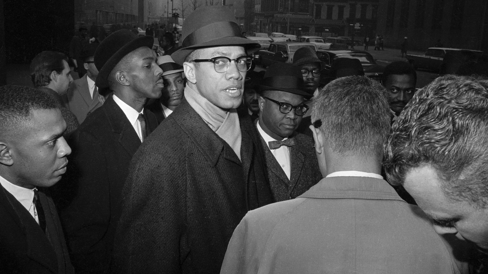

Malcolm X
The man who was an influential African American civil rights leader.

He was a prominent figure in the 1960s who is known for his radical stance on race relations, his powerful oratory, and his transformative journey from criminal to a global figure for human rights
Here's a time-line of Malcolm’s life:
- 1925 - Malcolm Little (later Malcolm X) is born in Omaha, Nebraska.
- 1929 - The Little family home is burned down in Lansing, Michigan, likely by white supremacists.
- 1931 - Earl Little, Malcolm’s father, is killed in what was officially ruled as a streetcar accident, though many believe it was a racially motivated murder.
- 1937 - Malcolm’s mother, Louise Little, is institutionalized in a mental hospital. Malcolm and his siblings are placed in foster care.
- 1941-1946 - Malcolm drops out of school and becomes involved in criminal activities, leading to his arrest in 1946 for burglary.
- 1946 - Malcolm is sentenced to 10 years in prison for burglary.
- 1948 - While in prison, Malcolm is introduced to the teachings of the Nation of Islam (NOI) through letters from his siblings. He begins corresponding with NOI leader Elijah Muhammad.
- 1950 - He renounces his surname "Little" and adopts "X" as a symbol of the lost identity taken from African slaves.
- 1952 - Malcolm is released from prison and joins the Nation of Islam, becoming a full-time minister.
- 1953 - Malcolm X becomes an assistant minister in Detroit’s Temple No. 1.
- 1954 - He is promoted to minister of Temple No. 7 in Harlem, New York City.
- 1957 - Malcolm gains national attention after he intervenes in a case of police brutality against NOI member Hinton Johnson, leading to a peaceful protest and media coverage.
- 1960 - Malcolm X creates the NOI’s official newspaper, Muhammad Speaks.
- 1962 - His influence in the Nation grows, and he becomes a leading figure in promoting Black nationalism, self-reliance, and separation from white society.
- 1963 - Malcolm delivers the "Message to the Grassroots" speech, advocating for revolution and self-defense for African Americans.
- 1964 - Break with Nation of Islam and Pilgrimage
- 1965 -Assassination and Legacy
- 1965 (Posthumous) - The Autobiography of Malcolm X, co-written by Malcolm and journalist Alex Haley, is published. The book becomes a classic and a key document of the civil rights era.
- 1992 - Spike Lee’s film Malcolm X, starring Denzel Washington, brings renewed attention to Malcolm’s life and legacy.
- 2021 - Two men convicted of Malcolm X's assassination, Muhammad A. Aziz and Khalil Islam, are exonerated after decades of speculation about their innocence.
"Education is the passport to the future, for tomorrow belongs to those who prepare for it today." —Malcolm X